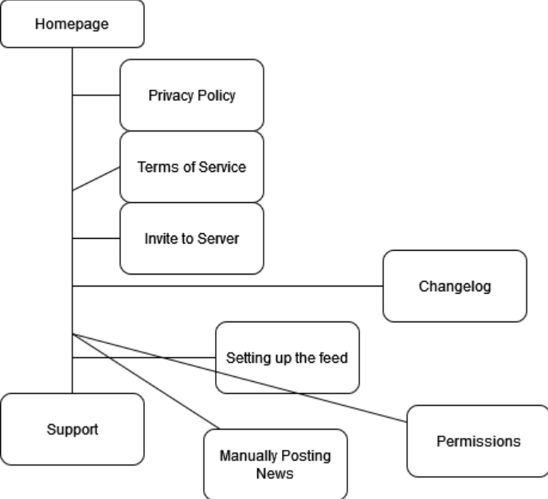

Client is peer outside of this course
1. A website designed to showcase the functions of a discord server bot.
2. Name:Kevin Shimeld
Organization associated with:Snailbot(name of the server bot)
Email:Private
Phone Number:Private
General idea of what the webpage layout will look like

Sitemap of what will be on the project
Page Design
1. Homepage:will be a page for customers dedicated to the introduction to Snailbot, its functions, and other details regarding it.
There will be both buttons and hyperlinks, the buttons will lead to other pages that users of the software may need to effective use the bot
and there will be only one or two hyperlinks that lead to the source code on GitHub
2. Privacy Policy: will be for everyone to read entailing the privacy policy and agreement that they are accepting by letting the bot into their server.
the page will mainly be text with a hyperlink leading them to the documentation of the bot
3. Terms of Service:will be another page for all audiences to read which entails the terms that govern access to SnailBot's services.
the page will pretty much be the same as the Privacy Policy but will have more hyperlinks that lead to the terms of service to the other sites that Snailbot is related to.
4.Invite to Server: just leads to another page for people who want to use the bot to add to their discord server. will have short text and a button that opens discord and adds them to the server.
5. Changelog: will show all changes made to Snailbot for users to stay up to date. will be a page of ordered lists to show all changes made with each patch.
6. Setting up the feed: Will be a guide for users on how to setup automated news posting in SnailBot.
the contents of the page will be a nav bar where it will show a different text regarding which platform the user is trying to setup a feed for.
7. Permissions: Instructions on permissions the admin of the Discord server need to give to Snailbot in order for core features to work properly.
will just be a short table with the permission, status and reason.
8. Manually Posting News: Instructions on users for how to manually post news with SnailBot.
will utilize tabs to showcase different platforms the user wants to manually post.
9. Support: will lead to a page that is there for the users to join a the Discord server made to help those having issues with Snailbot. will be a page that leads to a link styled as a button, which opens up Discord, inviting the user to join the support server.